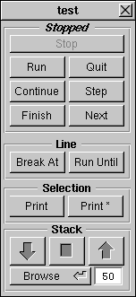
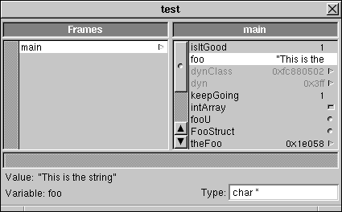

The data breakpoint facility has been restored after its removal in Release 3.1. This allows the programmer to break whenever a range of memory is about to be changed. The program will run significantly slower when this feature is used.
Release 3.3 Copyright ©1995 by NeXT Computer, Inc. All Rights Reserved.
| 3.3 Release Notes: The GNU Source-Level Debugger
This file contains release notes for the 3.3, 3.2, 3.1, and 3.0 releases of GDB, the GNU Debugger. Items specific to the 3.2 release are listed first, and the Release 3.1 and 3.0 notes follow. |
Notes Specific to Release 3.2
| New Features |
| The following new features have been added to gdb since Release 3.1. |
| Data breakpoints. The data breakpoint facility has been restored after its removal in Release 3.1. This allows the programmer to break whenever a range of memory is about to be changed. The program will run significantly slower when this feature is used. |
| data-break address size data-break expression |
| Causes the program to break when the specified data is about to be modified. The first form causes the data considered to start at address for size bytes. The second form causes the data considered to start at &expression and continue for the size of expression. An Objective C object will be considered to be the size that its class dictates at the time of the data-break command. data-break with no arguments removes any outstanding data-break condition. |
| Examples: |
| Program will stop if the range 0x1000 - 0x100b inclusive changes. |
| an assignment to foo will cause the program to stop. |
| an assignment to foo[0] will cause the program to stop. |
| an assignment to any of the characters from foo[0] - foo[19] inclusive will cause the program to stop. |
| an assignment to foo will cause the program to stop. |
| an assignment to foo will cause the program to stop. |
| an assignment to foo->a will cause the program to stop. |
| an assignment to foo->a or foo->b will cause the program to stop. |
| an assignment to foo will cause the program to stop. |
| an assignment to foo->appSpeaker will cause the program to stop. |
| an assignment to any of the instance variables of foo will cause the program to stop.
Note that the program stops before the memory is actually changed. This allows the programmer to examine the state of the program both before and after the change. Continuing the program (by any means, including single stepping) will permit the modification, but the program will stop upon the next modification. Commands and conditions can be assigned to these breakpoints, which can also be enabled/disabled/deleted just like normal breakpoints. |
Notes Specific to Release 3.1
| New Features |
| The following new features have been added to gdb since Release 3.0. |
| Upgrade to GNU version 4.7. The debugger has been upgraded to include the latest source code from GNU. This brings many bug fixes and several feature enhancements, some of which are mentioned below. | ||
| Better C++ support. When used with the 3.1 compiler and the -gg switch (this may not be the default), gdb is able to show C++ methods with more readable (demangled) names. The user can now insert breakpoints using these names. Object instances are displayed as their derived classes instead of their base classes. When inside an instance method instance variables are directly accessible. | ||
| Fat file support. Gdb now supports multi-architecture files. It uses the version that will run on the host system. |
| Removed Features |
| The following new features have been removed from gdb since Release 3.0. |
| Data breakpoints. The data breakpoint facility has been removed. |
Notes Specific to Release 3.0
| These notes were included with the Release 3.0 version of the Mess Kit. Sections that are no longer relevant have been marked with an italicized comment.
3.0 Release Notes:
This file contains information about GDB, the GNU Debugger. For more information, see the following chapter in the NeXT Development Tools manual: |
| Chapter 8: "The GNU C Source-Level Debugger" |
| Also see the following UNIX manual page: |
| gdb(1) |
New Features
| Enhanced view command |
| The existing "view" command has been enhanced to provide a much tighter connection with Edit. When this command is invoked a menu is added to Edit. This menu item brings up this panel |

| which allows the user to control some of gdb's basic functions. The "Selection" group of buttons uses Edit's current selection as a argument, and the "Line" group uses the current file and line. Additionally this panel:
 can be invoked by the "Browse" button. This allows the user to browse the local data in the debugged program. |
| Variable / Function / Method name expansion |
| GDB now supports command line expansion of variable, function and method names. This allows the user to type "ESC-ESC" or "TAB" to expand the current word on the command line to a matching name. If there is more than one match, the unique part will be expanded, and a beep will sound. "ESC-l" will display all possible completions. |
| History expansion of commands. |
| GDB now fully supports the csh syntax for retrieving previous commands. "!foo" will now retrieve the last command typed that began with "foo". Additionally this is supported between gdb sessions in the same directory. This is accomplished by writing out a file called ".gdb_history". This can be disabled with the command:
Other history parameters can also be modified. Use the help command:
for more information |
| Emacs command line editing |
| Gdb now fully supports the emacs command key set. All the basic emacs keys work, and we have added the arrow keys. Left and right arrow move the cursor. Up and down arrow go back and forth in the history. This renders the editmode command obsolete. |
| Consistency with dynamically loaded code |
| GDB is now always consistent with code that has been dynamically loaded by the debugged program. This includes all uses of rld_* functions, objc_[un]load* functions and NXBundles. Attaching and detaching to running programs is supported, as is debugging core files. This is transparent to the user.
Formerly the add-file command was used to achieve this. This command is still supported, but is now obsolete. |
| Attach/Detach works |
| Formerly this failed often enough to not qualify as a feature. In addition to correctly attaching and detaching, control-C interrupting of programs started by the Workspace now works. |
| Watchpoints |
| These are slow but accurate. The command:
will single step the program until exp is true. |
| Data breakpoints (Data breakpoints weren't supported in Release 3.1.) |
| These are fast but less specific. The following commands have been added to support data breakpoints:
data-break address size |
| Causes the program to break at the end of the function which changes the specified data. The first form causes the data considered to start at address for size bytes. The second form causes the data considered to start at &expression and continue for the size of expression. An Objective C object will be considered to be the size that its class dictates at the time of the data-break command. data-break with no arguments removes any outstanding data-break condition. |
| load-file file-name |
| Loads file-name into the debugged program. Any symbols are also added to gdb, so the user can communicate with the new object file through the use of functions and variables. |
| set-exit-handler function-name set-exit-handler |
| Causes function-name to be called every time a function is exited.The prototype of the function is int (handlerFunction)(void). If a non zero value is returned, the program will break at the end of the last function that was called. With no arguments, this removes the exit handler. |
| Data breakpoints are implemented using a scheme which involves calling a handler function at the end of every function. This allows the program to break at the end of the function that changed the data. This narrows the search for the offending line to a space between the last function called within a function and the last line of that function. A possible scenario is:
Memory is being smashed at 0x1000. data-break 0x1000 The program stops at the end of the function which caused the memory to change. The offending line is somewhere above where we are now. In fact it is somewhere between the end of last function that was called and the end of this function. Examples: |
| Program will stop if the range 0x1000 - 0x100b inclusive changes. |
| an assignment to foo will cause the program to stop. |
| an assignment to foo[0] will cause the program to stop. |
| an assignment to any of the characters from foo[0] - foo[19] inclusive will cause the program to stop. |
| an assignment to foo will cause the program to stop. |
| an assignment to foo will cause the program to stop. |
| an assignment to foo->a will cause the program to stop. |
| an assignment to foo->a or foo->b will cause the program to stop. |
| an assignment to foo will cause the program to stop. |
| an assignment to foo->appSpeaker will cause the program to stop. |
| an assignment to any of the instance variables of foo will cause the program to stop. |
| There are a few caveats to this scheme. First of all, functions without frame pointers are exempt from the checking. Second, the address that we are checking must be readable at all times that the data breakpoint handler will be called. Otherwise an exception will be generated inside the inferior program. gdb will catch this, and the user will have to turn off checking by using the data-break command with no arguments. |
| View now supports displaying files on other hosts |
| The view command can use Edit on either the same machine, or another machine, to display files.
with no arguments uses Edit on the same machine.
will use Edit on hostname.
will stop the viewing. |
| End Command |
| The end command has been added. For functions with 1 return point (all C functions that were compiled with frame pointers) it will stop at the end of the current frame, but before the return. This way you can examine the final state of a function. |
Removed features
| Idir command |
| The dir command now adds directories onto the beginning of the search path. To get the current search path do: info dir. |
| Editmode command |
| The new library uses emacs keys by default. If this is a problem, and you need vi keys or something else, let us know. |
| Really-run command |
| There is now a general facility to control confirmations in gdb.
If confirm is set off, the user will not be prompted on commands like "run". |